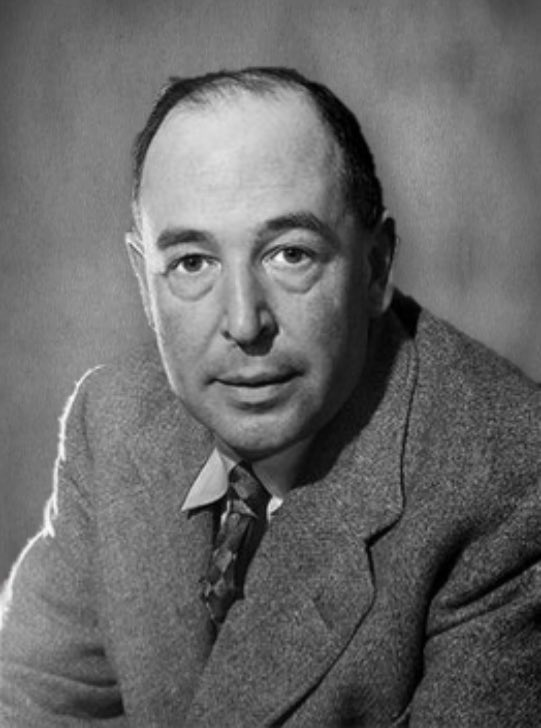
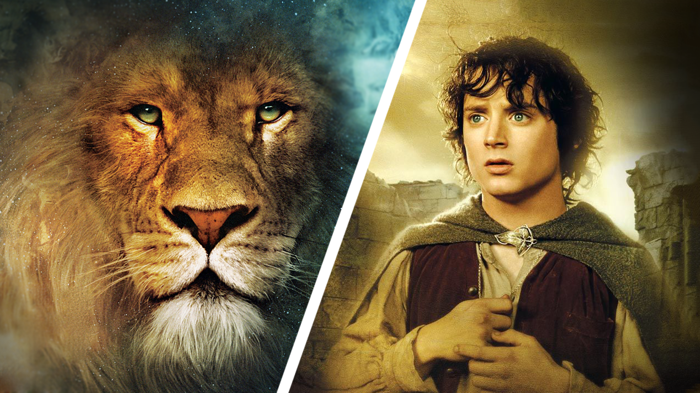
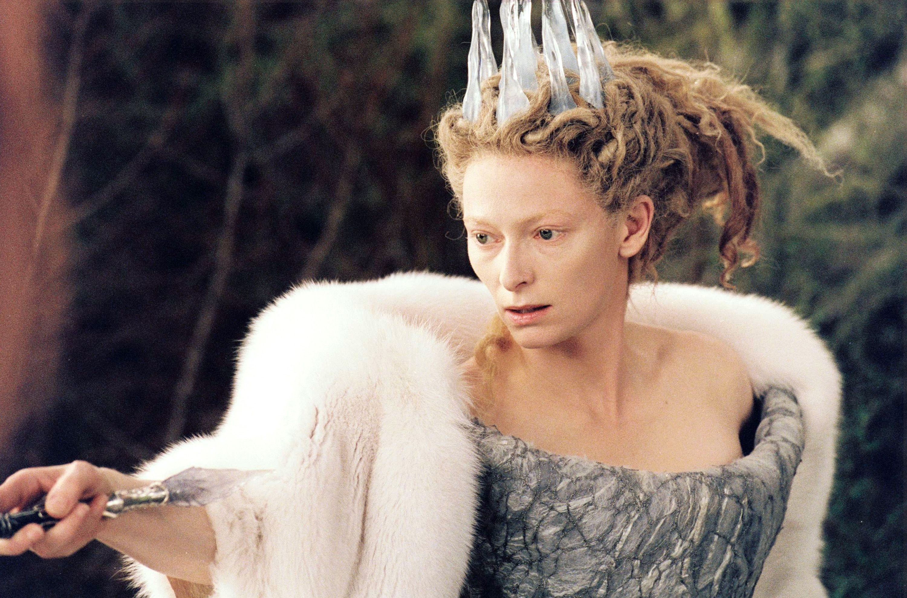
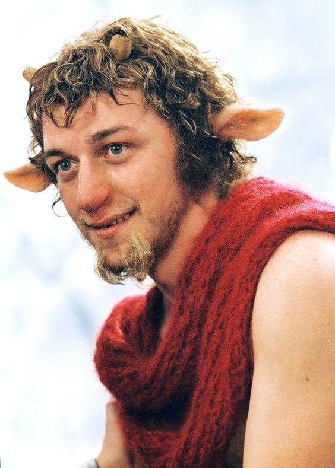
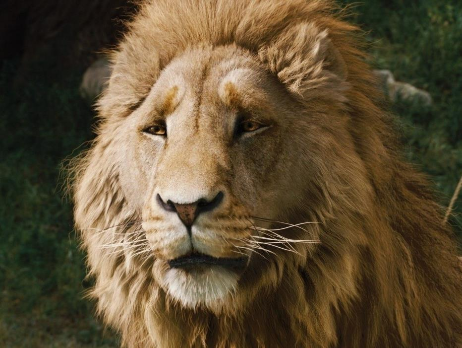

| ГЛАВНАЯ | О САЙТЕ |
О причинах, побудивших написать «Хроники Нарнии», их автор писал так: «В детстве мне казалось, что о вере можно говорить лишь вполголоса, как в больнице. Что, если перенести все это в волшебную страну, — подумал я, — где нет ни витражей, ни воскресных школ, может, тогда ребенок впервые увидит веру во всей ее мощи и устоит? И я понял, что да».
Всплески интереса к «Хроникам Нарнии» в последние годы связаны с голливудскими экранизациями серии.
Факты, о которых мы сейчас и расскажем.
1. К. С. Льюис не хотел видеть киноадаптацию "Хроник Нарнии"
За время съемок Поттерианы Даниэл Рэдклифф использовал не менее 80 палочек, потому что продолжал носить их с собой всё время.
В среднем, для всех основных персонажей было сделано по 6 палочек, однако для Дэниела Рэдклиффа пришлось сделать около 80, потому что он, например, использовал их в качестве палочек для барабана, выстукивая ритмы на разных поверхностях. Справедливости ради, в итоге актёр признавался, что ему было очень стыдно за свое безответственное отношение к реквизиту.
2. Сравнения с трилогией "Властелин колец" неизбежны, но оправданы
Годами люди замечали схожесть тематики и отдельных элементов в "Хрониках Нарнии" и цикле "Властелин колец", и не без причины. Помимо того, что они были близкими друзьями, Льюис и Дж. Р. Р. Толкин также являлись членами "Инклингов", группы писателей и академиков в Оксфордском университете, которые раз в неделю собирались вместе, чтобы обсудить работы друг друга. Странным образом Толкин вовсе не был фанатом цикла Льюиса, однажды прокомментировав (хотя и не вполне определенно): "Печально, что Нарния и прочее в работе Льюиса останется за пределами моей симпатии, так же как моя работа не импонирует и ему".
3. Тильда Суинтон хотела перевернуть представления о "киношной ведьме"
Для Тильды Суинтон дать согласие на роль Белой Колдуньи было легко, "хотя я не могу понять, почему", говорила она MovieWeb. "Может быть, это было местью людям, которые недобро относились ко мне в детстве. Оказалось, что замораживать детей — это легко и увлекательно". Когда речь зашла о характере ее персонажа, Суинтон сказала, что они с Адамсоном "изначально разделяли мнение о том, что обоим не казались убедительным кудахтанье и крики выбешенных ведьм, которых мы видели в детстве. Они не пугали нас. Мне казалось, что раз Колдунья — не человек, она должна быть воплощением глобального зла. Это словно бесплатный проезд за счет бреда, который можно наговорить. Не нужно ничего подытоживать. Дети, да и вообще чего любой человек в любом возрасте пугается, так это неопределенности и эмоциональной холодности. Как и идеи, что ты не можешь повлиять на кого-то, что не можешь понять, откуда они появились, и что они могут изменить свое отношение к тебе в любой момент".
4. Перевоплощение в своего персонажа для Джеймса МакЭвоя было долгим и болезненным процессом
Как для фаната цикла книг и Мистера Тумнуса в частности, играть фавна для Джеймса МакЭвоя было "большой честью", но у всего есть своя цена. Каждый день актер проводил три часа в кресле гримера, чтобы ему приклеили парик, бороду, брови, шерсть и части тела (включая радиоуправляемые уши). Но для того, чтобы превратить нижнюю часть тела в козлиную, МакЭвой носил пару "прелестных теплых меховых штанов" поверх зеленого трико, чтобы копыта добавили во время пост-продакшна, что также означало, что он должен был ходить на цыпочках. "Я испробовал ходули, шпильки и кроссовки с высокой подошвой, чтобы им было легче пририсовывать мне козлиные ноги", говорил МакЭвой The Daily Record. "Но лучшим способом оказалась походка на цыпочках с полусогнутыми коленями и сгорбленностью".
5. Аслан расширил границы технологий
Аслан, царь-Лев, озвученный Лиамом Нисоном, был полностью создан на компьютере. И если вам хотелось, чтобы у него было больше экранного времени, задумайтесь над этим: на то, чтобы нарисовать один кадр, в котором он появляется на экране, уходило приблизительно 10 часов.
Эти и другие факты можно прочитать по ссылке.
Также можете ознакомиться с фактами по другим франшизам: